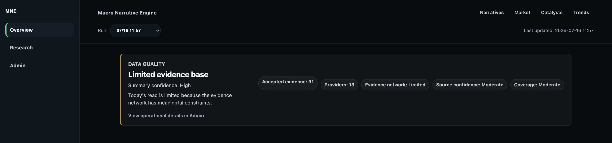
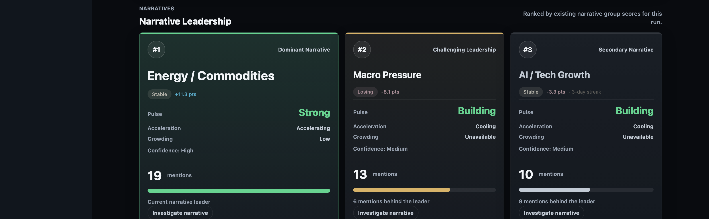
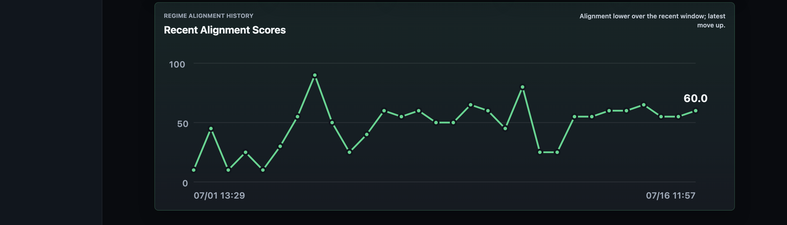
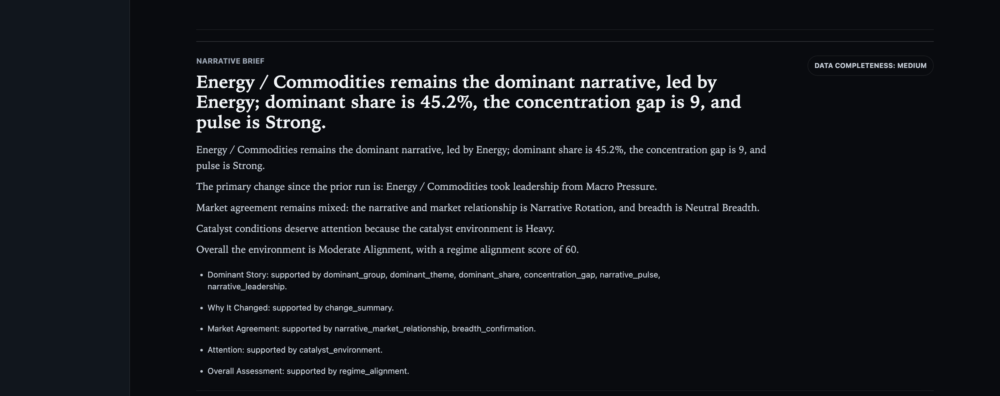
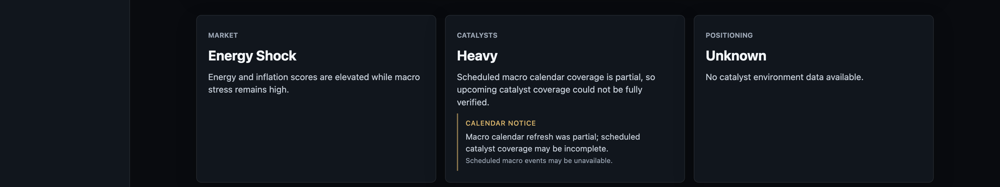
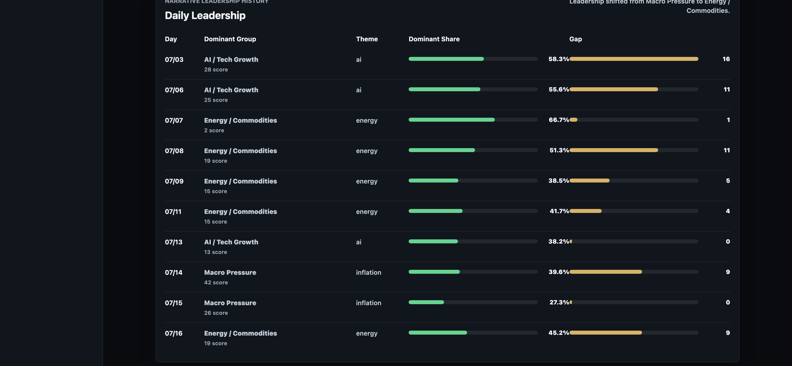
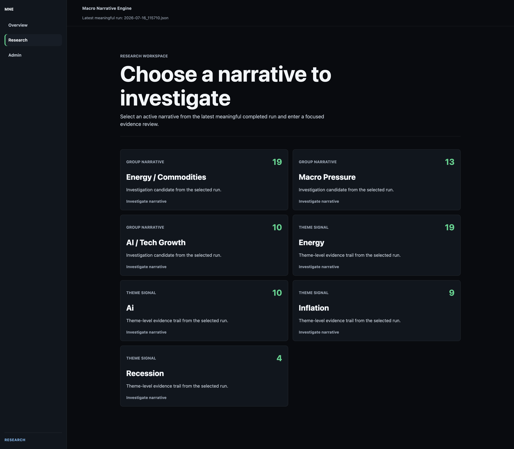
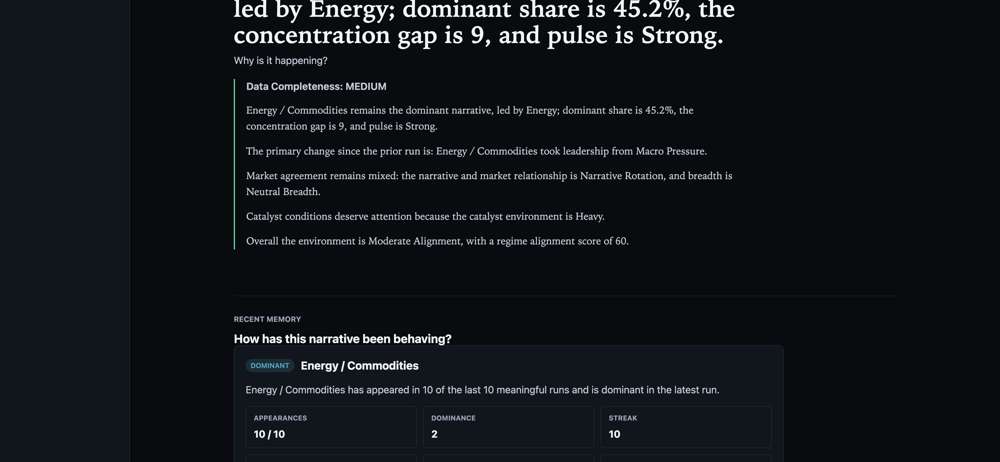

Macro Narrative Engine (MNE) is an evidence-driven market intelligence system. It helps you understand the current market environment, the dominant narratives driving attention, the catalysts ahead, and — just as importantly — how much you should trust the evidence behind all of it.
Every dashboard run follows the same pipeline. Headlines and data are collected, sorted into narrative themes, measured for strength and change over time, and then layered against real market and calendar context. The result is a single page that tells you what the market conversation currently looks like, and how solid the ground under that read actually is.
An evidence-driven market intelligence system that helps you understand the current market environment, dominant narratives, catalysts, positioning, and the quality of the evidence behind the read.
A stock-picking service, a prediction engine, a trade-signal generator, a guaranteed forecasting tool, or financial advice. MNE helps you understand the environment you are making decisions in — it does not make the decision for you.
The live dashboard (the Overview page) is built as one long, top-to-bottom scroll. Everything above the fold is primary; everything below is supporting detail you reach for when you want to go deeper. Read it in this order the first few times you use it.
Three page-level jump links (Narratives, Market, Catalysts, Trends) sit in the header for fast navigation once you know the layout. A left-hand rail switches between Overview (live dashboard), Research (narrative investigation workspace), and Admin (operational diagnostics).

A practical first pass through the dashboard, in the order you should actually do it.
Sections 04–17 explain each dashboard element in the order you encounter it on the page. Section 18 covers the Research Workspace, Section 19 covers Historical Replay. If you only read one more section right now, read Section 20 — what MNE can and cannot tell you.
Before you read anything else, the dashboard tells you how much evidence it had to work with, and how current that evidence is.
MNE writes a new result file every time it runs. The dashboard defaults to the latest meaningful run — the newest run that actually produced narrative signal — rather than simply the newest file on disk.
The banner at the top states one of five evidence-base labels, a confidence level, a plain-language reason, and a row of supporting facts.
| State | What it means |
|---|---|
| Strong evidence base | Ample accepted evidence, healthy provider network, good coverage. |
| Usable evidence base | Enough evidence to read with normal confidence, without being exceptional. |
| Limited evidence base | Meaningful constraints exist in the evidence network — read with more caution. |
| Thin evidence base | Very little accepted evidence, or the dashboard had to fall back to an older meaningful run. |
| Data unavailable | No run data or diagnostics could be loaded at all. |
The fact row spells out the inputs behind that label: Accepted evidence (how many evidence items passed acceptance checks this run), Providers (distinct upstream sources), Evidence network (a composite network-health read), Source confidence (how well sources fetched and contributed this run), and Coverage (how broadly that evidence was spread across narratives).
Data confidence describes the evidence base — how much was collected, how fresh it is, how many independent sources agree it exists — not confidence that the market will move in a particular direction. A "Strong evidence base" run can still describe a highly uncertain market; a "Thin evidence base" run can still be directionally correct. They are answering different questions.
Market Environment is the hero headline at the top of the dashboard. It answers one question:
"What kind of market backdrop is currently present?"
MNE checks a fixed, ordered set of conditions — narrative signals (macro stress, AI strength, energy dominance), how concentrated attention is, and two market moves (QQQ and VIX) — and returns the first label that matches:
| State | Roughly means |
|---|---|
| Energy Shock | Energy and inflation scores are both elevated alongside high or rising macro stress. |
| Risk-Off | Volatility sharply higher, Nasdaq down, and Macro Pressure is the dominant narrative. |
| Fragile Risk-On | Stocks up, but volatility is also sharply higher and macro stress is high — a shaky rally. |
| AI Momentum | AI / Tech Growth dominates, AI narrative score is strong, and Nasdaq is strongly higher. |
| Clean Risk-On | Nasdaq strongly higher, volatility flat or down, AI leading, macro stress low. |
| Macro Stress | Macro stress is high alongside Macro Pressure leadership or rising volatility. |
| Narrative Rotation | No narrative group clearly dominates; the top two groups are close in score. |
| Low-Conviction Chop | Nasdaq and volatility both flat, and attention isn't concentrated. Also the fallback state. |
Each state also carries a confidence (High / Moderate / Low, based on how many corroborating conditions fired) and a reason — a fixed, human-written sentence explaining the match.
On the run captured for this guide, the Market Environment card read Energy Shock, with the reason: "Energy and inflation scores are elevated while macro stress remains high." That single label told the user, before reading anything else, that the backdrop was commodity- and inflation-driven rather than a clean risk-on or risk-off tape.
A forecast of what markets will do next, or an instruction to buy or sell energy-sensitive assets. It is a classification of present conditions, not a projection of future ones.
This section answers: which story is currently dominating market attention, and by how much?
energy, ai, inflation, recession, ratesenergy, oil, and commodities theme scores.
A prediction that the dominant narrative will keep leading. It is a same-run ranking of existing narrative-group scores, nothing more.
Each Pulse reading also carries its own confidence (High / Medium / Low), based on how much share and persistence back up the state — a "Strong" Pulse backed by 30%+ share and a multi-run streak is High confidence; a "Strong" reading with thin support is Low confidence.
Pulse measures narrative attention and leadership persistence — not price, not volume, not options flow. A Dominant Pulse describes how much the story is dominating coverage, not how the related assets are trading. For that, look at Regime Alignment and the narrative/market relationship state (Sections 08 and 13).
On the dashboard, "Regime" refers to Regime Alignment — a single 0–100 score measuring how well price and market action are confirming the current dominant narrative.
Classifies the current backdrop (Energy Shock, Risk-Off, Clean Risk-On…) from price moves and narrative signals.
Scores, 0–100, how well narrative leadership is being confirmed by price, breadth, positioning, and catalysts.
A display-only interpretation lens (Macro or Nasdaq) that turns the same underlying data into a plain-language "read" sentence. It does not change any score.
Regime Alignment starts at a neutral base of 50 and is adjusted by five inputs: the narrative/market relationship state (confirmation adds, divergence or exhaustion subtracts), breadth confirmation, market environment, positioning, and Nasdaq-specific price/volatility context. The result is clamped to 0–100.
| Score | State |
|---|---|
| 80–100 | High Alignment |
| 60–79 | Moderate Alignment |
| 40–59 | Mixed / Low Alignment |
| 20–39 | Conflicted Environment |
| 0–19 | Highly Conflicted Environment |

A trend-strength or volatility-regime indicator in the traditional technical-analysis sense. It specifically measures narrative-to-market agreement, nothing else.
Operating Mode is an interpretation lens, not a scoring input. Two modes are currently implemented:
The default mode. Produces a fixed-format "Broad Macro Read" state and a Moderate-confidence sentence naming the dominant group, market state, and breadth state.
A richer, Nasdaq-specific read built from QQQ, NVDA, VIX, and DXY moves, macro stress, AI dominance, catalyst positioning, breadth, and Regime Alignment. States include Nasdaq Macro Pressure, Nasdaq Pre-Catalyst Chop, Nasdaq Risk-On Confirmation, Nasdaq Divergence, and Nasdaq Mixed Conditions.
Mode changes only the generated headline sentence and its confidence label — it does not change Pulse, Regime Alignment, group scores, theme scores, or any other underlying calculation. Both modes read the same evidence; they just narrate it differently. An unrecognized mode value silently falls back to Macro.
A narrative's score tells you where it stands right now. Dynamics tell you where it's headed.
In the Research Workspace, a "Recent Memory" panel classifies a narrative's recent behavior into one label: Dominant, Persistent, Building, Fading, Recurring, Re-accelerating, Dormant, Emerging, or Absent, alongside plain-language context like appearances, dominance count, streak length, and score/share deltas.
A group leads on raw score but Acceleration reads Cooling and Momentum reads Fading — the lead is inherited from past runs, not being reinforced today.
A #3 group with a modest score but Accelerating momentum can be more informative than a flat #1 — it signals where attention is moving next.
A group can remain #1 by score while its Dominant Share shrinks run over run — leadership intact, but the margin narrowing.
These two labels are not currently produced anywhere in MNE's dynamics or memory engine. If you've seen them used informally, treat the closest current equivalents as Persistent / Dominant (for "entrenched") and Cooling (for "decelerating").
The Narrative Brief translates the run's numbers into a short, plain-language explanation — a headline, a summary, and a handful of key points, each traceable back to the exact fields that produced it.

An explanation of the current narrative structure, not as a forecast. Every sentence in the brief is grounded in a specific, logged field from this run — it is describing what already happened in the evidence, not projecting what happens next.
The Catalyst Environment answers: how much scheduled market-moving news is coming, and how well-verified is that calendar?
MNE counts upcoming red (high-impact) and orange (medium-impact) events over the next 14 days. Density score = (red events × 2) + orange events.
| Density score | State |
|---|---|
| 0 | Quiet |
| 1 | Light |
| 2–3 | Moderate |
| 4–5 | Elevated |
| 6+ | Heavy |
High-impact (red) events currently include CPI, PPI, the Employment Situation (the monthly jobs report), FOMC decisions and press conferences, GDP, and Personal Income and Outlays (which carries the PCE price index). Medium-impact (orange) events include JOLTS, the Employment Cost Index, Import/Export Price Indexes, FOMC Minutes, International Trade, and the EIA's weekly petroleum and natural-gas reports.
A CPI print being flagged "high-impact" says nothing about whether it will be bullish or bearish. The red/orange label is purely about expected attention and volatility, never about direction. Nothing in the catalyst engine assigns bullish or bearish meaning to any event.
A density score of 0 alone is not enough for MNE to claim "nothing is coming." It only labels the calendar Quiet when the automatic macro-calendar refresh is healthy and current. If that refresh was partial, stale, missing, or unparseable, MNE reports Calendar Unavailable or Calendar Stale instead of Quiet — and lowers catalyst confidence — so a failed check is never mistaken for a genuinely clear calendar.
| Verified Quiet | Calendar Unavailable / Stale |
|---|---|
| Macro calendar refreshed successfully, and no red/orange events found. | The refresh itself failed, was partial, or every stored event date is in the past — MNE cannot confirm there's nothing coming. |

Company earnings catalysts are sourced automatically for a fixed watchlist of ten large-cap names (NVDA, AAPL, MSFT, GOOGL, META, AMZN, AMD, TSM, AVGO, TSLA); anything outside that list must be added manually to the catalyst calendar.
This is the narrative/market relationship classifier — it compares what the narrative is saying against what price is actually doing.
| State | What it means |
|---|---|
| Narrative Confirmation | The AI / Tech Growth narrative is stable or accelerating, and QQQ and NVDA are both up while volatility stays controlled — price is validating the story. |
| Narrative Divergence | The AI / Tech Growth narrative is still strong by score, but QQQ or NVDA is down — the story isn't being confirmed by price. |
| Narrative Exhaustion | Attention crowding is High, the same group has led for 5+ runs, share is 50%+, but price is now weakening — the narrative may be overextended. |
| Narrative Rotation | The dominant group changed from the prior run, or the leader is cooling while another group accelerates. |
| Neutral / Mixed | No clear pattern, or required inputs were unavailable. |
The Confirmation and Divergence states are currently only defined for the AI / Tech Growth group. Other dominant groups (Macro Pressure, Energy / Commodities, Geopolitical Risk) will show Rotation or Neutral / Mixed instead — they don't yet have their own confirmation logic.
A trade signal. "Confirmation" means price and narrative currently agree — it is not an instruction to buy, and "Divergence" is not an instruction to sell.
Breadth checks whether index-level moves are broadly shared or concentrated in a handful of large names, using SPY, RSP (equal-weight S&P 500), QQQE (equal-weight Nasdaq-100), and IWM (small caps) alongside QQQ, NVDA, and VIX.
QQQ, SPY, and RSP all rising together, volatility flat or down — strength shared across cap-weighted, equal-weight, and small-cap names.
QQQ and NVDA up while equal-weight and small-cap proxies lag or fall — the index move is a small number of names doing the work.
| State | Meaning |
|---|---|
| Strong Breadth Confirmation | Broad-based strength across cap-weighted, equal-weight, and small-cap participation. |
| Broad Risk-Off | Broad-based selling across the same participation set, with volatility rising. |
| Narrow Leadership | Headline strength concentrated in QQQ/NVDA while broader participation lags. |
| Weak Breadth | Headline index holding up while underlying participation is deteriorating. |
| Neutral Breadth | No clear broad confirmation or deterioration — the fallback state. |
Breadth can support or weaken confidence in a narrative read, but it does not by itself prove a move is real or fake — it is one more piece of corroborating context, best read alongside Regime Alignment and the narrative/market relationship state.
On the current dashboard, "Positioning Environment" is a calendar-driven classifier — it describes how close the market is to a high-impact scheduled event, not trader positioning, options skew, or futures data.
| State | Trigger |
|---|---|
| Active Catalyst Positioning | A high-impact event is scheduled today. |
| Heavy Event Positioning | Catalyst density score is 6 or higher. |
| Elevated Positioning Activity | Catalyst density score is 4 or higher. |
| Pre-Catalyst Positioning | A high-impact event is scheduled tomorrow. |
| Light Event Positioning | Some catalyst density, below the Elevated threshold. |
| Normal Positioning Environment | No nearby high-impact catalysts. |
| Unknown | Catalyst data wasn't available to classify against. |
MNE does not currently compute trader positioning, options-market crowding, one-sided futures positioning, or unwind risk from market data — those concepts are not implemented in the codebase. What's labeled "Positioning" here is contextual and calendar-based: it tells you how close you are to a scheduled catalyst, not how crowded a trade is. Do not use it as a timing signal for entries or exits. The separate "narrative crowding" concept (Section 10) measures attention concentration, not market positioning, either.
MNE maintains a static map from each theme to the assets typically associated with it — primary names, secondary names, and offsets (hedges or inversely-related instruments).
This mapping is computed on every run and saved into the run's data, but it is not rendered anywhere in the current dashboard interface. It exists in the underlying data and in text/CLI reports, and it can be cited as supporting context inside a Narrative Brief, but there is no dashboard panel for it today. If you see asset tickers referenced in brief text, this map is the likely source.
When it is surfaced (in reports or future dashboard views), each entry is explicitly labeled: "These assets are narrative-expression proxies and not trade recommendations."
The Market Expression Map identifies assets connected to a narrative. It does not tell the user to buy or sell them.
The Narrative Leadership History table tracks which group led each day, its dominant share, and the gap to the runner-up — the run-over-run story behind the leadership cards.

MNE can be run more than once on the same day. To keep this history meaningful, the daily trend views (this table, and the CLI trend reports) collapse each calendar day down to its single most recent run before charting it — so re-running MNE five times on a Tuesday does not inflate Tuesday's weight in the trend line to five data points. This day-collapsing logic is separate from the "Recent Memory" panel in Research Workspace, which instead looks at the last N runs directly, regardless of how many fell on the same day.
Gap is the point difference between the day's leader and the runner-up. A widening gap over successive days means the leading narrative is pulling away; a narrowing gap means the field is tightening — worth cross-checking against the rotation badge on the live leadership card.
When the dashboard's summary isn't enough, click Investigate narrative on any leadership card — or open Research from the left rail — to enter a focused evidence review for a single narrative.


The Evidence Reader panel is explicit about its own limits. Every item includes the line: "This interpretation is based on the persisted headline and evidence metadata. Full article text is not available in MNE." and "This is not a complete article summary." MNE tells you directly when its knowledge of a story stops at the headline.
Coverage in this view (Minimal / Limited / Moderate / Broad / Extensive) describes how broad the supporting evidence is for one narrative — how many items, sources, and providers back it — and is explicitly not a judgment of narrative quality. Source Summary lists each contributing source with its health and freshness state.
Historical Replay reconstructs what MNE would have shown on a past date, using only evidence that MNE had actually stored at or before that moment. It is an admin-only, read-only feature.
Two separate limits apply. First, replay can only draw on evidence MNE actually persisted at the time — if live collection wasn't running yet for a given date, there is nothing to replay. Second, an optional Historical Backfill can add older evidence from outside sources, but today that backfill covers exactly one source: Federal Reserve / FOMC public communications. It is explicitly labeled partial coverage, not a full market-news reconstruction.
| Live dashboard | Historical Replay | |
|---|---|---|
| Evidence | Current, ongoing collection | Persisted evidence only, up to a chosen cutoff |
| Live fetching | Yes | Never |
| Access | Public dashboard | Admin only, read only |
| Use case | What's happening now | What MNE could have known on a past date |
Historical Comparison takes two completed replay artifacts and shows what changed between them — dominant theme/group shifts, score deltas, and evidence-base differences — without generating any new evidence or scores.
Historical Research views carry their own warnings when source coverage is limited, and state directly: "Historical coverage may be incomplete if MNE had limited stored evidence for this date." Older replays should be trusted less by default, not more.
MNE helps a user understand the environment in which they are making decisions. It does not make the decision for them.
A full read-through of one real, live MNE run, captured for this guide on 2026-07-16 at 11:57. Every figure below is sourced directly from that run.
Data quality first. The banner read "Limited evidence base" at High summary confidence — enough evidence to read the run, with a stated network constraint. That set the caution level for everything that followed.
Environment and dominant narrative. Market Environment read Energy Shock. Narrative Leadership confirmed Energy / Commodities as the clear #1, having just taken leadership from Macro Pressure — visible directly in the "What Changed Since Last Run" card ("Energy / Commodities took leadership from Macro Pressure").
Pulse and Regime. Pulse was Strong with High confidence and an Accelerating trend — this wasn't a narrative merely holding on to a prior lead, it was actively strengthening. Regime Alignment sat at 60 (Moderate Alignment) — price and market context were partially, not fully, confirming the story.
Persistence and catalysts. Research Workspace showed Energy / Commodities dominant in 10 of the last 10 meaningful runs, with a 10-run streak and +18.0 point share delta — a narrative gaining ground, not just persisting. The Catalyst Environment read Heavy, but with a Calendar Notice flagging a partial macro-calendar refresh, so upcoming coverage might understate what's actually scheduled.
Confirmation and positioning. The narrative/market relationship read Narrative Rotation (a same-run leadership change), and Breadth was Neutral — no strong broad confirmation either direction. Positioning read Unknown, because the calendar data it depends on wasn't available in the shape that classifier needed.
Energy / Commodities was the clear, strengthening center of market attention, backed by a real and accelerating evidence trend — not a one-run spike.
Regime Alignment was only Moderate, breadth was Neutral, and positioning context was unavailable — market confirmation was partial, not complete, and the catalyst calendar itself was flagged as an incomplete refresh.
Whether Regime Alignment moves toward High Alignment as more market confirmation arrives, whether the macro calendar refresh completes and changes the catalyst read, and whether Energy / Commodities' Pulse and share continue to build or begin cooling in the next run.
This walkthrough is a description of one run's data, not a trade recommendation. See Section 20 for what MNE can and cannot tell you.
Every term used on the dashboard, defined in one place. Where a state applies specific numeric thresholds, see the relevant numbered section for detail.